The Team
Directors
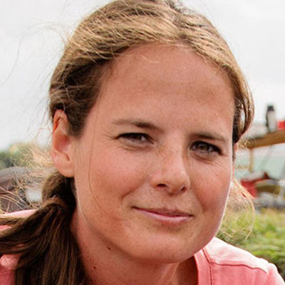
Nicky Milner
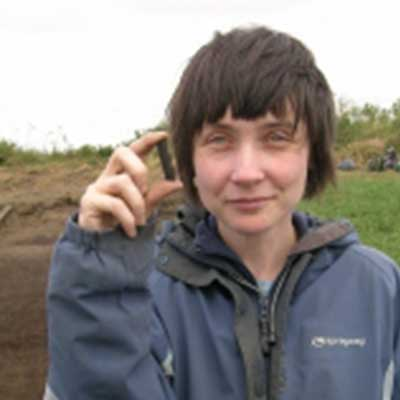
Chantal Conneller
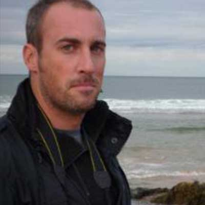
Barry Taylor
Staff
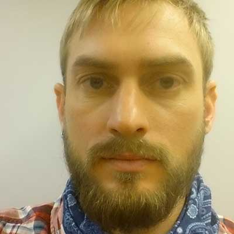
Mike Bamforth
Project Manager
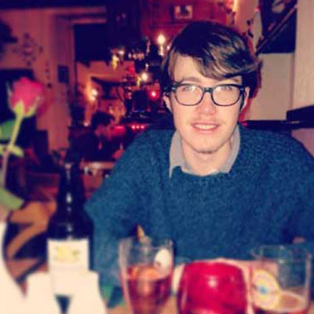
Julian Carty
Intern 2015-16
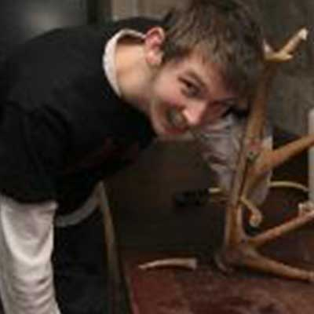
Ben Elliott
Digital archive and antler specialist
Becky Knight
Finds officer and faunal specialist
Aimee Little
PDRA microwear and residue analysis
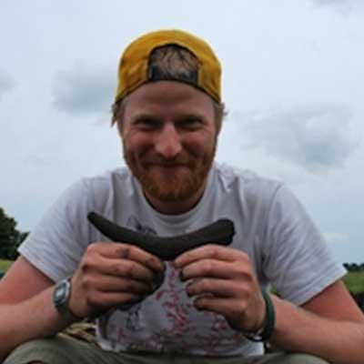
Harry Robson
Research assistant
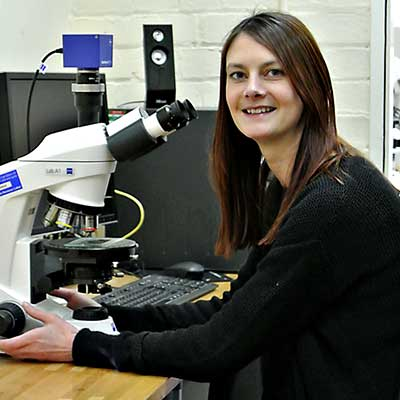
Emma Tong
Lab technician
Hayley Widdall
Intern 2014-15
Climate and environment reconstruction
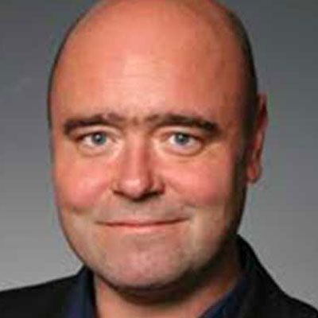
Simon Blockley
Ian Candy
Pete Langdon
Ian Matthews
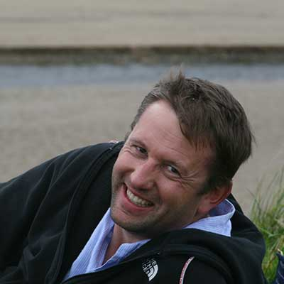
Adrian Palmer
Specialists
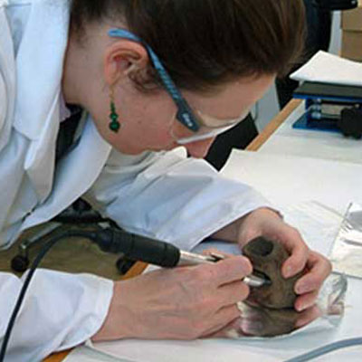
Alex Bayliss
Radiocarbon dating
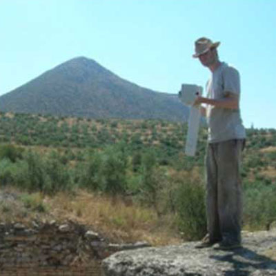
Edward Blinkhorn
Geophysics
Julie Boreham
Deterioration
Ian Matthews
Deterioration
Mike Buckley
ZooMS
Matthew Collins
Bioarchaeology
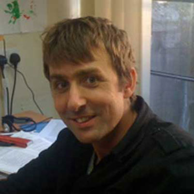
Oliver Craig
Bioarchaeology
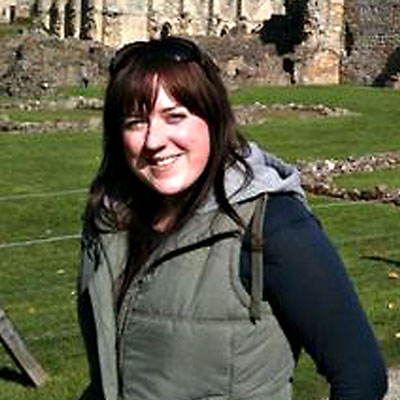
Laura Fitton
Laser scanning
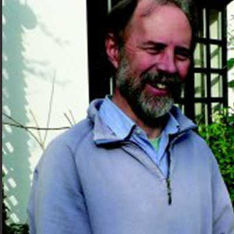
Charly French
Soils
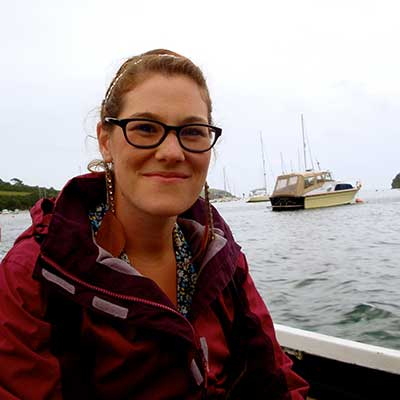
Kirsty High
Deterioration
Terry O’Connor
Faunal remains
Andrew Needham
Beads
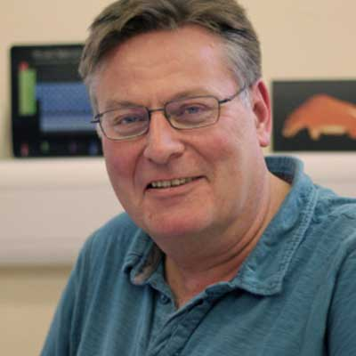
Ian Panter
Conservation
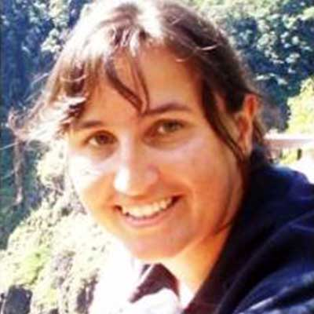
Kirsty Penkman
Deterioration
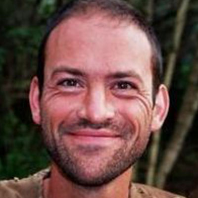
Diederik Pomstra
Experimental archaeology
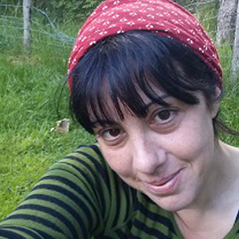
Anita Radini
Archaeobotany
Maisie Taylor
Wood
Research students
PhD students
Shannon Croft
Residue analysis
Don Henson
Public perception of the Mesolithic
Charlotte Rowley
Soils and lithics
Undergraduate and postgraduate students
Lucie Fletcher
Birch bark rolls
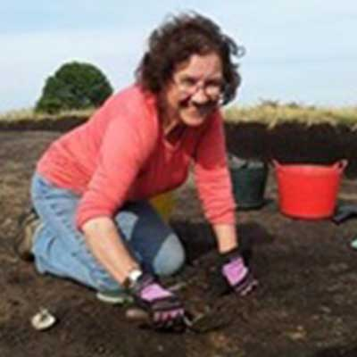
Alison McQuilkin
Phytoliths
John Webb
Stone
Visualisation and outreach
Gareth Beale
Reflectance transformation imaging
Matt Dever
Photography
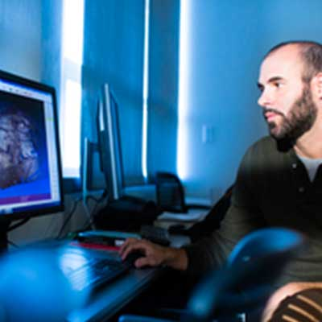
Fabrizio Galeazzi
3D viewer
Neil Gevaux
Web design and photogrammetry
Anthony Masinton
Flythrough
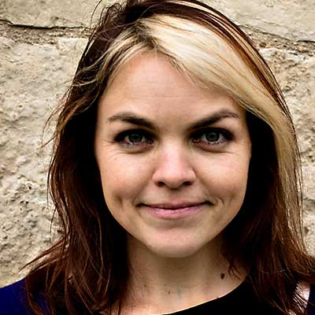
Colleen Morgan
Social media and publicity
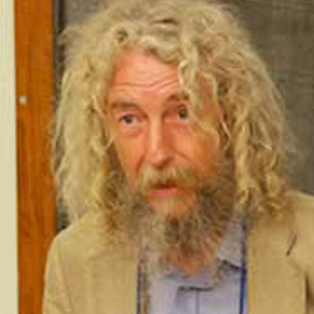
Dominic Powlesland
Photogrammetry, scanning
Chloe Watson
Illustrator
Advisory board
Graeme Barker
Martin Bell
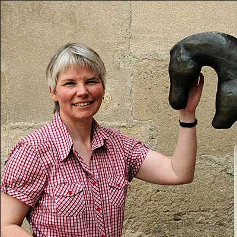
Berit Eriksen
Carl Heron
Edward Impey
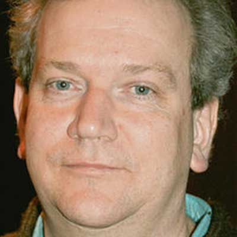
Harald Lübke
Neil Redfern
Historic England
Tim Schadla-Hall